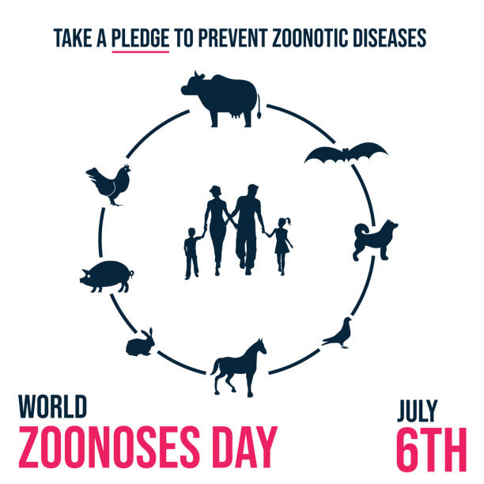

| Home | Noticia |
|---|
Dia da Zoonose |
||
| A saúde humana e a animal estão indissoluvelmente ligadas. Os seres humanos dependem dos animais para sua nutrição, companhia, desenvolvimento tecnológico, socioeconômico e científico. Por esse motivo, o tema desse Dia Mundial das Zoonoses é “Uma Saúde”.
Zoonoses são doenças transmitidas pelos animais aos seres humanos. De acordo com a Organização Mundial de Saúde (OMS), existem mais de 200 tipos de zoonoses. Cerca de de 60% das doenças infecciosas humanas têm sua origem em animais; pelo menos 75% das doenças infecciosas emergentes dos ser humano, incluindo Ebola, HIV e gripe, têm origem animal; 5 novas doenças humanas aparecem todos anos e 3 delas são de origem animal. Por todo o mundo, as zoonoses respondem por 62% da Lista de Doenças de Notificação Compulsória. Inserida no conceito de Saúde Única, reconhecido pela Organização Mundial da Saúde (OMS) como a interdependência das saúdes humana, animal e ambiental, a preocupação quanto às zoonoses sempre foi pauta pública mundial, mas ganhou destaque com a pandemia provocada pelo Covid-19, que acredita-se ter sido originada em morcegos e transmitida aos seres humanos por meio de pangolins (espécie de tamanduás escamados). A zoonose é uma doença infecciosa causada por um patógeno que se originou em animais, mas pulou para os seres humanos, diretamente ou através de uma espécie intermediária. Os animais, portanto, desempenharam um papel essencial na manutenção de infecções zoonóticas – bacterianas, virais ou parasitárias – na natureza. Atualmente, o que se conhece é apenas uma pequena parcela dos vírus que existem na natureza. Muitos deles são descobertos quando uma nova zoonose é detectada. Ao todo, cerca de três quartos das novas doenças (ou doenças conhecidas que ressurgem em novas formas), sejam elas virais ou bacterianas, foram transmitidas por animais. Uma zoonose pode ser transmitida, dentre outras maneiras, por mordidas e arranhões, contaminação de comida e água, além de contato com fezes e carcaças. Outra forma comum de transmissão acontece durante o abate de animais. A transmissão pode ocorrer diretamente do hospedeiro. E há casos com animais intermediários, como suspeitam os cientistas que estudam a Covid-19. A contaminação do novo coronavírus, seja de animal para humanos, seja entre humanos, ocorre por gotículas respiratórias ou saliva, espalhadas pelo contato próximo. Spillover é um termo em inglês que pode ser traduzido como transbordamento e é usado no contexto da ecologia para dizer que um vírus ou micróbio conseguiu se adaptar e migrar de uma espécie de hospedeiro para outra. Foi o que ocorreu com o agente infeccioso causador da Covid-19. As zoonoses geram impactos não apenas à saúde pública, mas também causam graves perdas econômicas. A busca de soluções para esses problemas, dada a sua complexidade, implica em uma abordagem de cooperação em nível intersetorial e requer contribuição, intervenção e colaboração de equipes profissionais dos setores da saúde humana, animal e ambiental. Nesse sentido, os governos precisam formular e adotar políticas de saúde pública que levem em consideração os vários fatores que aumentam o risco e dificultam o controle das zoonoses, tais como, mudanças climáticas, desmatamento, incêndios florestais que afetam a biodiversidade genética da vegetação e a destruição do habitat animal, aumento da relação entre humanos e animais selvagens, animais abandonados nas vias públicas, viagens intercontinentais, entre outros. A definição clássica de zoonoses é a de doenças que são transmitidas de animais para humanos, ou de humanos para os animais. |
||
|  |